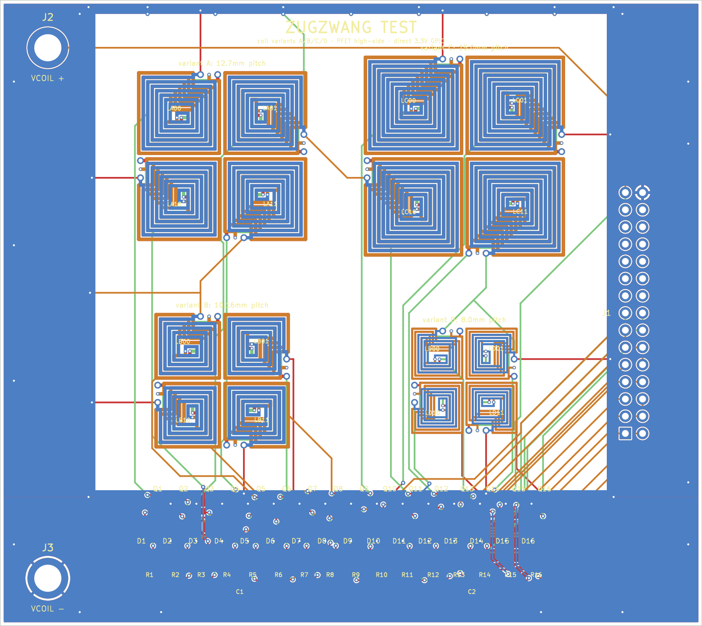
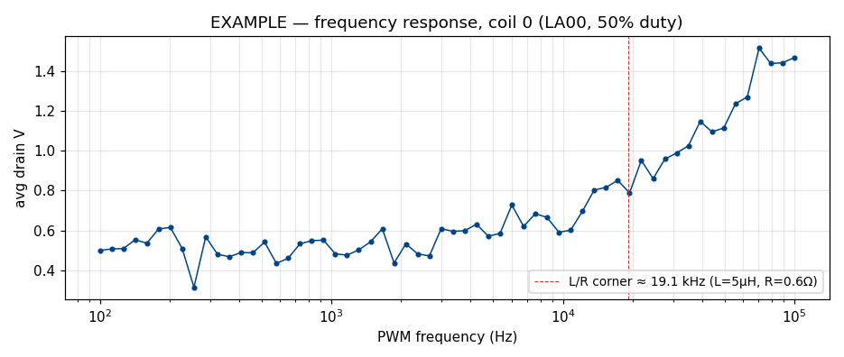
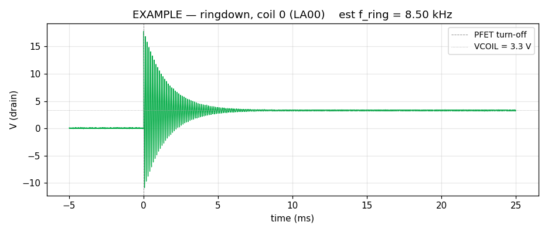
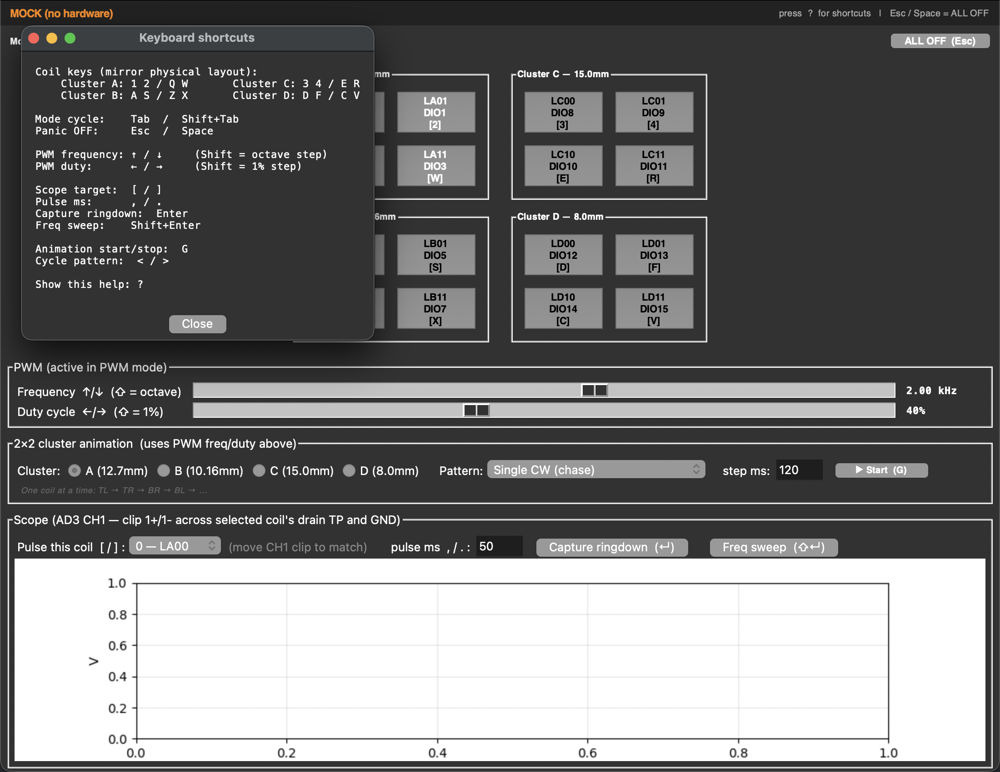
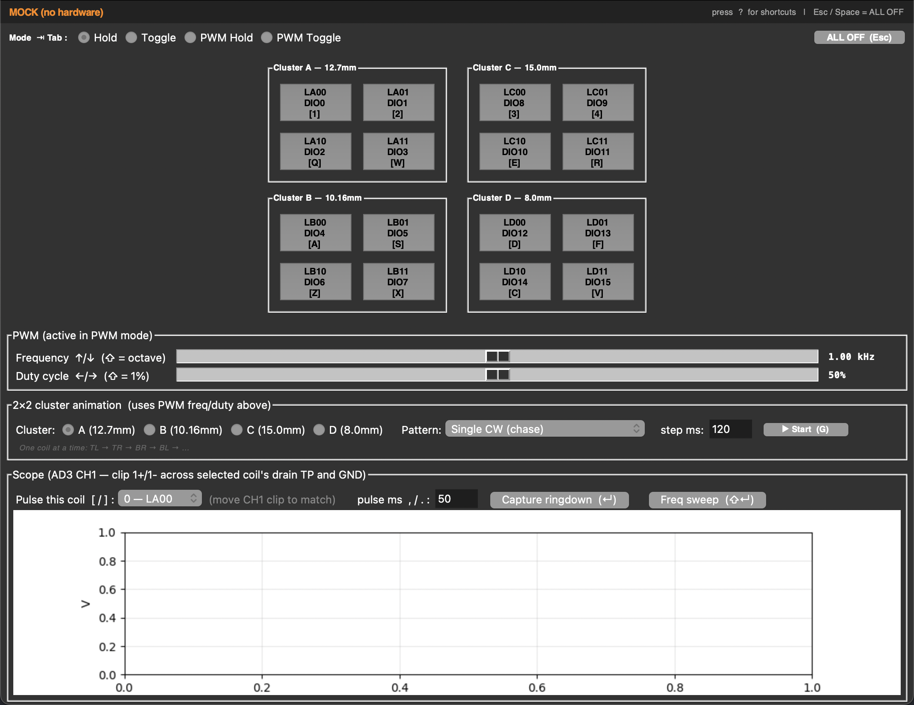
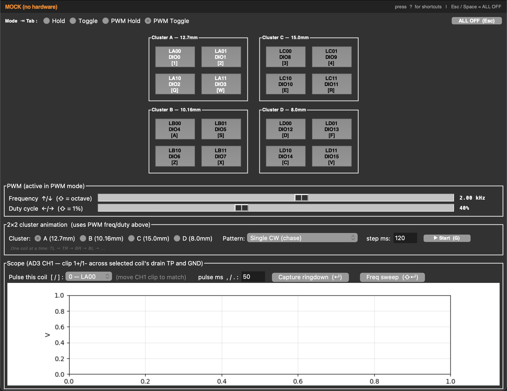

echess — Electromagnetic Chessboard
2026-05-02 · mtime · https://github.com/jsharf/echess






_Last updated: 2026-05-01_ # echess — STATUS Electromagnetic chessboard. PCB coils under each square move pieces (each containing a magnet) by switching coils on/off in a coordinated way. ## Current phase **Coil characterization — waiting on hardware.** Test board (`test_board/`) ordered from JLCPCB on 2026-04-30, expected delivery 2026-05-07 to 2026-05-10. Bringup will identify which of four candidate coil geometries (variants A/B/C/D) produces enough lateral force to slide a piece against static friction at 3.3 V drive. ## What's working ### PCB design + fab pipeline - `pcb_coils/test_board.py` — Python generator emits flat-text `.kicad_pcb`, `.kicad_dru`, `.kicad_pro`, plus auto-generated `BOM.csv` and `PINOUT.md`. No schematic — netlist is hand-coded in Python and stable across runs via deterministic UUIDs. - `pcb_coils/autoroute.py` — Specctra DSN export → FreeRouting (1.9.0) → SES import → zone refill → DRC. Produces a 0-violation, 0-unconnected layout in ~5 minutes. - `pcb_coils/fab_export.py` — Generates JLCPCB-ready `gerbers.zip`, `cpl.csv` (with per-package rotation corrections — KiCad's pin-1 reference differs from JLC's tape orientation), and `bom.csv`. Excludes coils + test points + banana plug holes from CPL/BOM via `exclude_from_pos_files exclude_from_bom`. - `pcb_coils/coil_gen.py` — generates 4-layer square-spiral coil footprints. Used standalone and embedded in `test_board.py`. ### Test board (105.4 × 117.3 mm, 4-layer FR-4) - 16 coils = 4 variants × 4 each, in 2×2 cluster layout: - **A**: 12.7 mm tile, 0.5 mm trace, 0.16 mm space (matches main 4×4 board) - **B**: 10.16 mm tile, 0.5 mm trace, 0.16 mm space (matches 5×5 board) - **C**: 15.0 mm tile, 0.5 mm trace, 0.16 mm space (oversized) - **D**: 8.0 mm tile, 0.3 mm trace, 0.16 mm space (compact) - Per-coil driver: SQJ423EP P-channel MOSFET (PowerPAK SO-8, −40 V / −55 A) high-side, 10 kΩ gate pull-up to VCOIL, local SMF18CA bidirectional TVS clamp across each coil. - Direct-drive: AD3 DIO_i → GATE_i (active-low). VCOIL = 3.3 V, matched to AD3 logic level. No level shifters, no shift registers. - 18 through-hole test points (TP1–TP18) for scope clip access at every drain + power rail. J2/J3 are 4 mm plated through-holes for direct banana plug spring-fit (no jacks). ### Test/control software - `pcb_coils/coil_test_gui.py` — tkinter + matplotlib GUI using pydwf to drive the AD3 (screenshots in `project_photos/`): - 4×4 cluster grid of coil buttons mirroring board layout, with keyboard shortcuts mapped to physical position (1234/QWER/ASDF/ZXCV). - Modes: Hold (default), Toggle, PWM Hold, PWM Toggle. Tab cycles modes. - PWM 10 Hz – 100 kHz, log-spaced freq slider, 0–100% duty. - Capture ringdown — pulse coil ON, scope-trigger on OFF edge, plot decay, estimate ring frequency from zero-crossings (proxy for L given known parasitics). - Frequency response sweep — 100 Hz – 100 kHz log-spaced, plot mean drain V vs freq. - All controls have keyboard shortcuts (vi
Recent commits
68bde2c Add top silkscreen: ECHESS wordmark, ruler, metadata, crosshairs 9b40c42 Generate JLCPCB-ready Gerber + drill files 562a26d Add 0.3mm edge frame for JLCPCB manufacturing 5c6ad95 Fix DRC: board-level segments with nets, 0.16mm clearance rules 50b84dc Add 5x5 board variant (10.16mm coils, same 50.8mm board) 495ce04 Drop pinwheel rotation — all coils at 0° with separate headers ed6dc4b Swap 0/180 in pinwheel rotation pattern ced8a97 Fix 4x4 rotation to correct pinwheel pattern ac5e066 Fix 4x4 rotation: checkerboard 90/270 pattern per user spec 7e4f08f 4x4 board with pinwheel rotation for header convergence
Notes
# echess — design log Append-only. Newest entry at the top. Each entry: what was decided, what alternatives lost, why. --- ## 2026-05-01 — AD3 control GUI (`coil_test_gui.py`) **Decided**: single-file tkinter GUI with matplotlib-embedded scope panel. Backend speaks pydwf. 16 coil buttons in 4 cluster panels mirror the physical board. Modes: Hold (default), Toggle, PWM Hold, PWM Toggle. Tab cycles. Every control has both a click target and a keyboard shortcut, with shortcuts shown inline next to each control and a persistent footer cheat-sheet. **Lost alternatives**: - *PyQt5/PySide* — better-looking, but adds a heavy dependency for a tool whose lifetime is one bringup season. Tk ships with Python. - *Mock-mode default* — explicitly rejected. Default is hardware-required so we never run a "real test" against fake state by accident. `--mock` is opt-in for offline UI work. - *Separate scope tool / WaveForms passthrough* — could have left scope work to WaveForms entirely and just driven the DIOs from Python. Embedding the scope in the same window keeps "pulse coil → see ringdown" a single click, which is the whole point of this rig. - *Per-channel PWM peripherals* — AD3 doesn't have 16 independent PWM peripherals; it has one Pattern Generator buffer driving all 16 DIOs synchronously. Acceptable: every PWM coil shares freq/duty, which is what we want for characterization anyway. **Why**: the test phase is "watch what happens, change one knob, watch again." Latency and friction matter more than feature breadth. A laptop keyboard is faster than reaching for a mouse, especially when you have a magnet in one hand. --- ## 2026-04-30 — Test board ordered **Decided**: ordered from JLCPCB with 5 bare + 2 assembled. Final fab files at `test_board/fab/`. ORDER.md captures the whole ordering process for reference. **Total $255**. Bigger than expected — 32 SQJ423EP MOSFETs at $1.80 each are most of the merch line; Section 321 de minimis is dead for China-origin goods so duties (~$50) are baked in regardless of HS code. **Lost alternatives**: - *OSH Park / Eurocircuits (non-China)* — would dodge Section 301 tariff but is more expensive even net of tariffs for prototype quantities. Rejected. - *Hand-source LCSC parts and assemble locally* — would save $57 in MOSFET BOM cost and ~$17 PCBA setup, but I don't own a reflow station and JLC's PCBA pipeline is faster end-to-end. --- ## 2026-04-30 — JLC tape-rotation correction layer in fab pipeline **Decided**: `fab_export.py` applies per-package rotation deltas when writing the CPL. KiCad's "0° rotation = pin-1 in this corner" doesn't match JLC's "0° rotation = pin-1 in their tape orientation" for many footprints. Codified as a substring-match table in `JLC_ROT_CORRECTIONS`: - `PowerPAK_SO-8` → +270° (KiCad's 0° is 90° clockwise from JLC tape ref) - `SOD-123` → +270° (same) - `0603` → no correction (symmetric) **Lost alternatives**: - *Rotate footprints in the source file (`test_board.py`)* — would distort